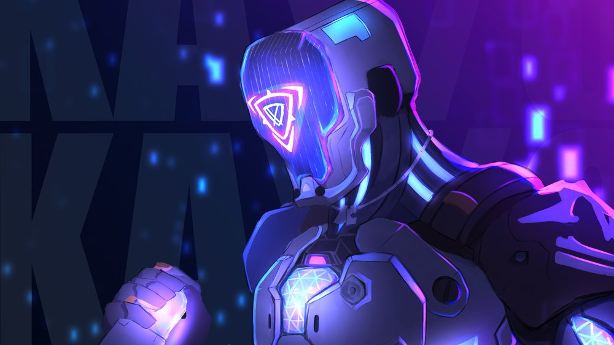
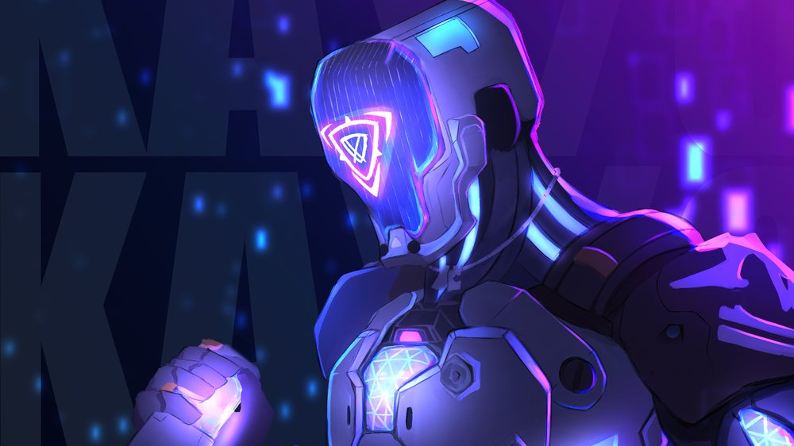
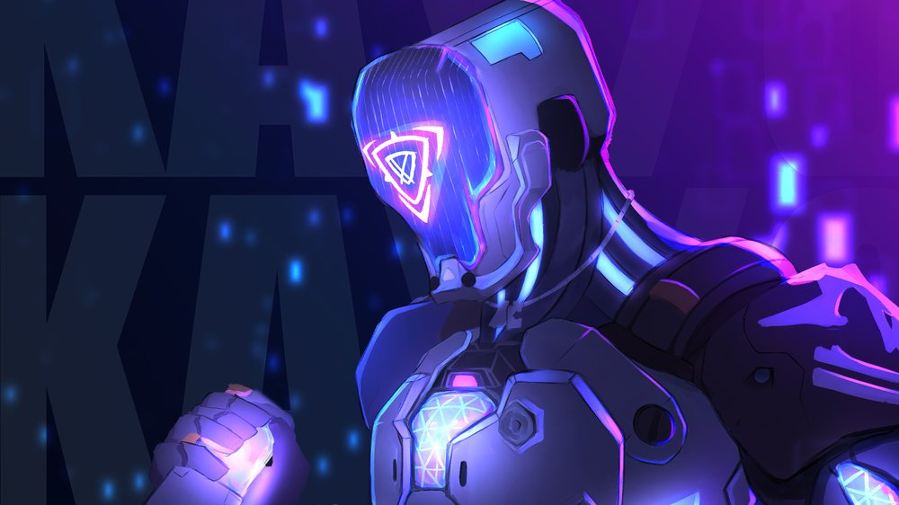
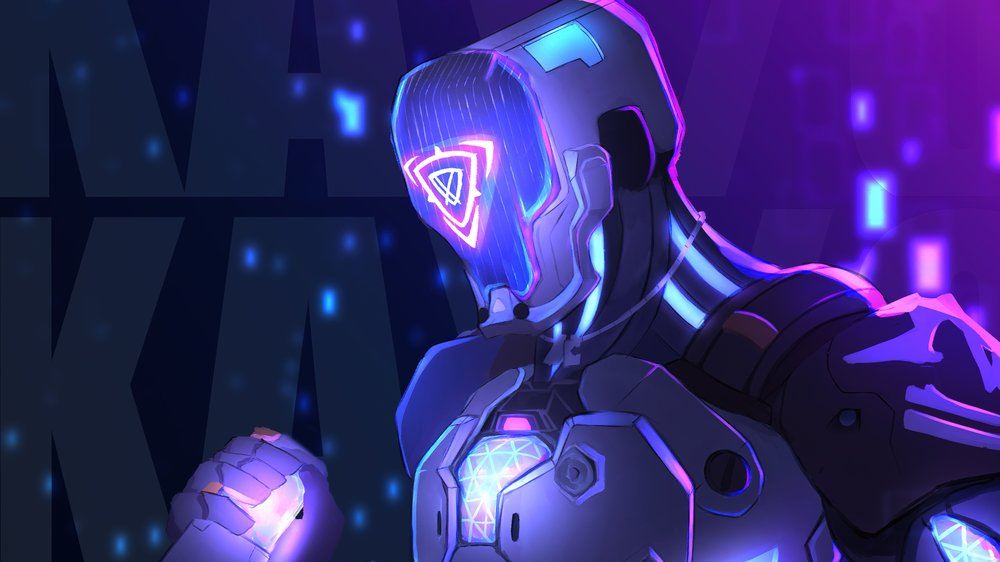

Kay/o

 



KAY/O es una máquina de guerra creada con un solo propósito: neutralizar radiantes. Su poder para suprimir las habilidades enemigas neutraliza la capacidad de sus rivales para contraatacar, un aspecto que le da a él y a sus aliados la ventaja definitiva en la batalla.
Kay/O es un iniciador,como su nombre indica es el encargado de "iniciar" los tradeos, todas las habilidades de kayo son perfectas para neutralizar al enemigo, y crear excelentes micros con los aliados.
Lanza una granada flash que ciega a los enemigos,con click IZQ,kayo lanza la granada a larga distancia y con click DRC la lanza a corta distancia.

Kayo equipa un cuchillo que puede ser lanzado a cualquier superficie,al explotar suprime a todos los enemigos que se encuentren en el radio de la explosion.
Equipa una granada que puede ser lanzada a corta o larga distancia,al igual que la flash,esta explota varias veces.
Kay/o se potencia y empieza a emitir ondas que suprimer a los enemigos,tambien al morir puede ser revivido.